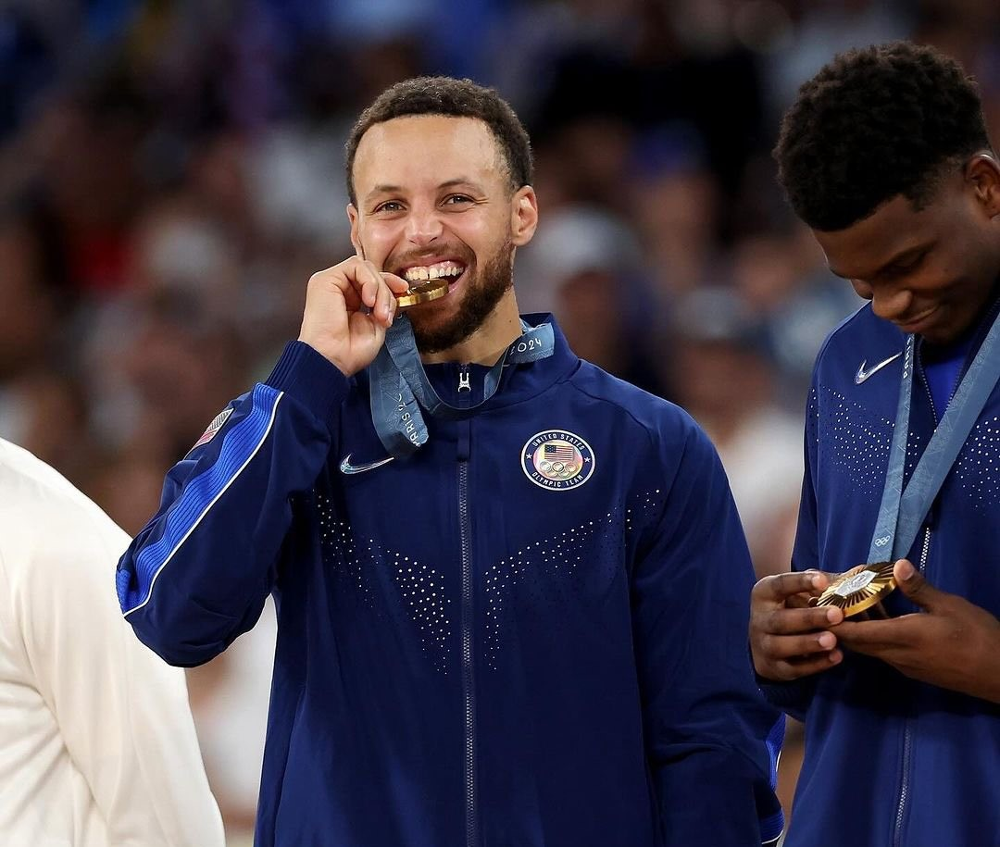

Giles Canque - Leadership Award Winner
"AMOA Youth Organization helped me develop my leadership skills and gave me the confidence to pursue my dreams. The support and opportunities provided were invaluable."
Empowering Youth, Shaping the Future
At AMOA Youth Organization, we believe in the power of youth to shape a brighter future. Since our inception, we have been dedicated to creating opportunities for young people to grow, learn, and lead. Our diverse programs are designed to inspire and empower the next generation, equipping them with the skills and confidence to make a positive impact in their communities.
Our leadership development program is designed to help young people build essential skills such as public speaking, teamwork, and strategic thinking. Through workshops and hands-on experiences, participants gain the confidence to lead and make a difference.
Learn MoreGet involved in our community service initiatives that aim to support local causes and make a tangible impact. From organizing charity events to participating in environmental clean-ups, there are many ways to contribute.
Learn MoreOur workshops and seminars cover a range of topics from career development to personal growth. These events are led by experts and provide valuable insights and practical skills for young people.
Learn MoreDate: September 15, 2024
Join us for our annual fundraiser gala to support our programs and celebrate the achievements of our youth.
View DetailsDate: October 22, 2024
A day-long conference featuring keynote speakers and interactive workshops focused on leadership skills and career development.
View DetailsDate: November 5, 2024
Come out and help us beautify our community with a day of environmental stewardship and teamwork.
View Details
"AMOA Youth Organization helped me develop my leadership skills and gave me the confidence to pursue my dreams. The support and opportunities provided were invaluable."

"Participating in the community service program opened my eyes to the impact we can have on our surroundings. It was a rewarding experience that I will always cherish."
We welcome support from individuals and organizations who are passionate about making a difference. Whether you want to volunteer your time, make a donation, or partner with us, there are many ways to get involved and contribute to our mission.
Get Involved